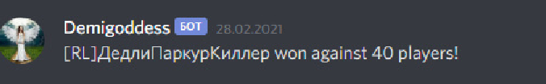
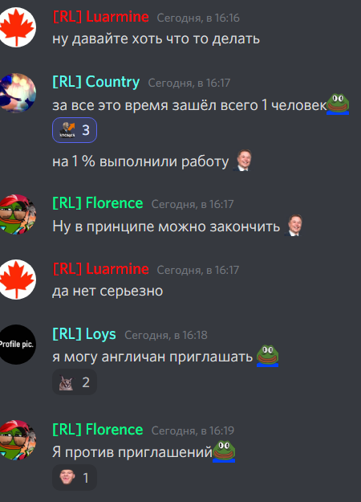
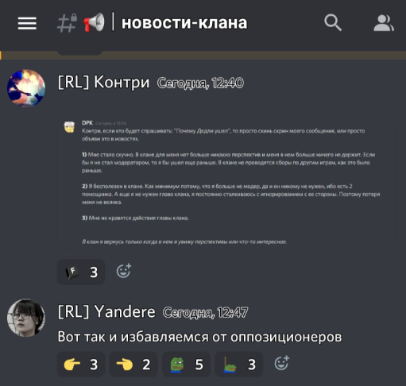

ㅤ
Дедли Паркур Киллер
DPK Присоединился к нам 17.02.2021, первое время он был просто рядовым членом нашего клана.
Спустя всего пару дней его кандидатуру выдвигают на пост члена великого совета, его принимают и он начинает в нем заседать.
Первое чем он начал заниматься стало создание нашего официального сайта - 06.03.2021. Это тот самый сайт с информацией о клане, о первом турнире (первый турнир не только в клане, но и вообще в территорал ио, турнир кстати был проведен по инициативе самого DPK), и о других кланах и их отношениях с нами.
Спустя еще небольшой промежуток времени Коноха снимается с поста Помощника, и уступает место следующему кандидату. Не долго думая Маэстро выбрал Дедли, так как он уже к тому времени заполучил большое доверие у Маэстро.
28.02.2021 - Одна из великих дат в истории нашего сервера, Дедли паркур Киллер первым из клана получает роль "Легенда", победив в самом крупном мачте (Батл Роял), этот день символ силы и мастерства нашего клана. И стоит так же отметить, что наш клан первый из всех кланов заполучил эту победу. -

Говоря о Турнире, 07.03.2021 Дедли организовывает первый турнир клана, заявки были собраны кандидаты готовы и 20.03.2021 проводится турнир "Grand Tournament I", и побеждает в нем сам DPK, это и не удивительно на тот момент он был одним из сильнейших игроков и столкнувшись в финале с Loys, в тяжелой битве он вырывает победу .
Следующим проектом Дедли становиться курс молодого бойца. (Первый туториал, и первые тактики разработаны в нашем клане)
21.03.2021 DPK, в целях повышения боевой мощи клана создает курс обучения, по окончанию курса обучаемый получал роль "Обучен". Через курс прошли всего 5-6 человек, идея была нова и хороша в своей сути, и даже приносила свои плоды. Но загруженность DPK, не дала раскрыться этой идеи на все 100%.
Идея с турнирами понравилась Дедли, и он подумывает проводить их каждую неделю, но идея особо не приживается и он отказывается от нее.
Идея с турнирами понравилась Дедли, и он подумывает проводить их каждую неделю, но идея особо не приживается и он отказывается от нее.
На этом наш герой не останавливается, начинаются масштабные преобразования в области организации самого клана. К тому времени Териториал уже начал по-немногу надоедать, клан разрастался на другие игры. По его инициативе они совместно с Маэстро Чарой создают роли - "Ютубер" - Появляется сеть ютуб каналов RL, "PixelPlace" - Клан начинает осваиваться в новой для себя онлайн игре, и входит в контакт с кланом PP, растущий интерес участников клана RL к этой игре потребовал создание отдельной роли и категории, в целом это был успешный проект. Роль "Generals io" и "Волонтер RL" - Первая, скорее личная забава Маэстро, круг игроков в эту игру не был особо широк, это было скорее забавой. Вторая роль, не удавшийся проект она не получила развития а суть её заключалась в помощи в развитии клана.
Дальнейшем DPK , проводил сборы и следил за соблюдением правил, но 08.05.2021 Дедли решают снять с поста Помощника за "не исполнение своих обязанностей". DPK Становиться рядовым участником клана, он был высокоуважаемый и с его мнением всегда считались.
13.05.2021 - В клане проходят выборы на роль модератора, в них и побеждает DPK вместе с Loys
Спустя некоторое время, а именно 16.05.2021 (в ходе выборов), когда все стало понятно, что найти нового достойного кандидата на должность Помощника пока что не возможно, DPK вновь возвращается к исполнению обязанностей Помощника.
13.05.2021 - В клане проходят выборы на роль модератора, в них и побеждает DPK вместе с Loys Спустя некоторое время, а именно 16.05.2021 (в ходе выборов), когда все стало понятно, что найти нового достойного кандидата на должность Помощника пока что не возможно, DPK вновь возвращается к исполнению обязанностей Помощника.
DPK Решает возобновить работу Великого Совета, и 24.05.2021 проводит выборы в совет, в которых побеждают - Florence, Lurman и Som, в целом этот состав совета хорошо . -

И 29.05.2021 DPK принимает решение покинуть клан, говорят что RL - Мертв, в нем нет перспектив и что это гиблое место.
Маэстро Чара называет его - "Сепарам" и "Оппозицией", до того Дедли и Маэстро стали часто ссориться, споры поднимались по вопросам организации деятельности клана, и ведения его дальнейшего развития
Маэстро Чара называет его - "Сепарам" и "Оппозицией", до того Дедли и Маэстро стали часто ссориться, споры поднимались по вопросам организации деятельности клана, и ведения его дальнейшего развития
Время шло, DPK отошел от дел и все реже и реже стал появляться в сообществе территориала. Причину своего ухода он изложил в записке, которую попросил передать Контри:
"Контри, если кто будет спрашивать: "Почему Дедли ушел", то просто скинь скрин моего сообщения, или просто объяви это в новостях.
1) Мне стало скучно. В клане для меня нет больше никаких перспектив и меня в нем больше ничего не держит. Если бы я не стал модератором, то я бы ушел еще раньше. В клане не проводятся сборы по другим играм, как это было раньше.
2) Я бесполезен в клане. Как минимум потому, что я больше не модер, да и он никому не нужен, ибо есть 2 помощника. А еще я не нужен главе клана, я постоянно сталкиваюсь с игнорированием с ее стороны. Поэтому потеря меня не велика.
3) Мне не нравятся действия главы клана.
В клан я вернусь только когда в нем я увижу перспективы или что-то интересное."
Маэстро Чара отреагировал на это сообщение следующим образом:

Вскоре, спустя почти месяц DPK выходит на связь с Контри и Конохой, 15.06.2021 они трое объединяются в клуб - KS, где просто слушали музыку и думали как вернуть DPK в клан. В итоге Дедли решил действовать, он вышел на диалог с Маэстро. И проговорив с ним все накопившие проблемы, так личные так и проблемы клана они находят общий язык и приходят к компромиссу. Дедли выполняет требования выставленные Маэстро и DPK возвращается в наш клан в качестве модератора.
24.06.2021 Проводятся выборы в Великий Совет, где DPK помогал партии Процветающий RL с предвыборной компанией.
Новая система Совета не ужилась, погрязла в вечных спорах и в итоги ничего не добилась, 1.07.2021 Совет распустили и организовали новый состав, в который был приглашен DPK.
После всего этого, DPK выполнял лишь роль модератора, проявлял активность хорошо сдружившись с Tuva и Макстрой Чарой они проводили веселые вечера на нашем сервере, листая двач большой компанией (Лойс, Маэстро, Тува, Контри, Флор и сам DPK).
Во время не долгово правления Tuva в качестве главы клана DPK выступал в качестве его помощника и главного советника, но этот период был короткий. Так же, ходят слухи что DPK участвовал в тайном проекте "ФССRL" - Федеральная Служба Сливов RL, но это только слухи.
В заключение хочу сказать, что для меня лично (как скорее всего для большинства тех кто с ним был знаком лично) DPK - Друг и товарищ, на которого можно положиться, весело посмеяться и поплакать. Дедли всегда был верен нашему клану, участвовал во всех войнах того времени, в ликвидации FC, BL, FT и прочих врагов RL. На сегодняшний день он в законном отпуске, высоко почитаем и любим.
Слава RL, Легендам Слава!
ㅤ